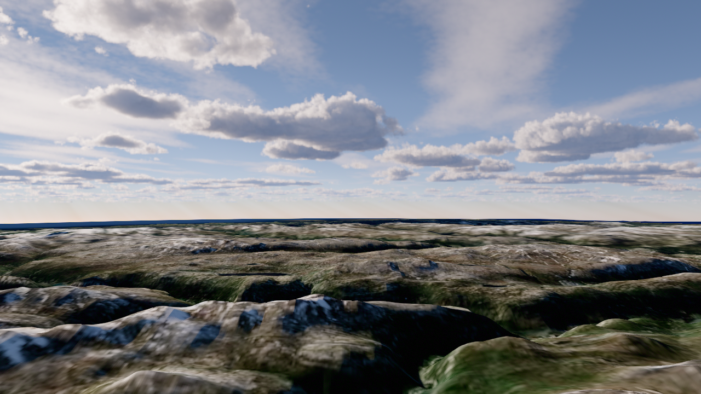
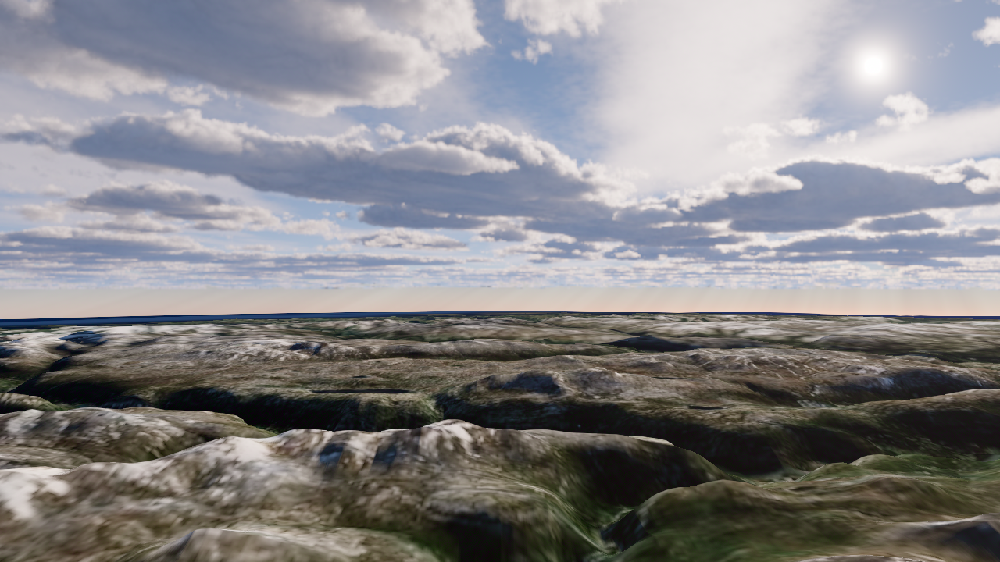
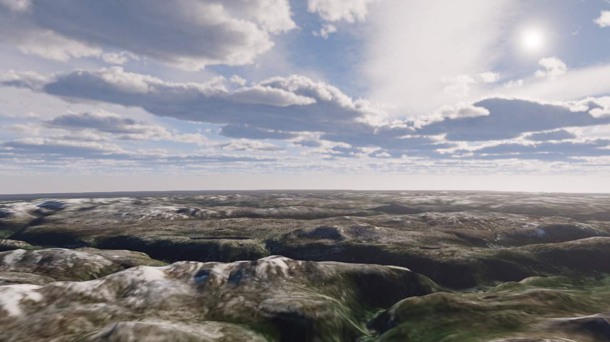
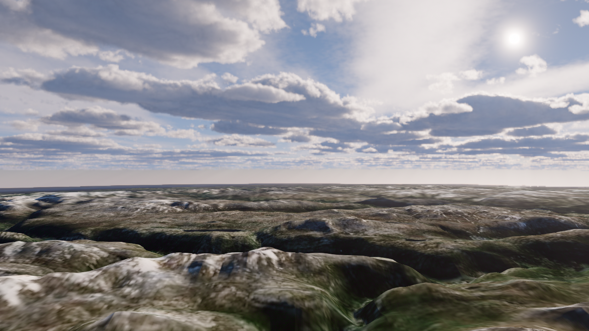
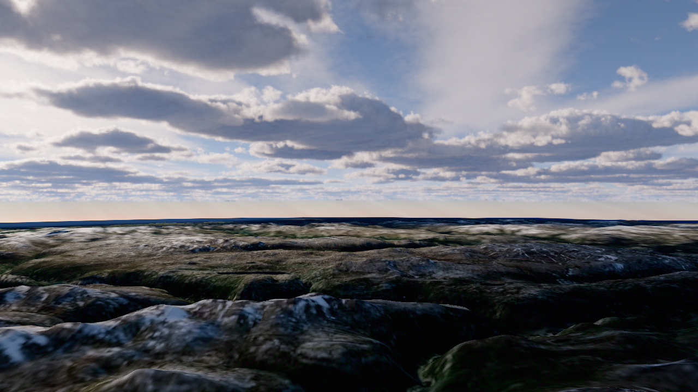
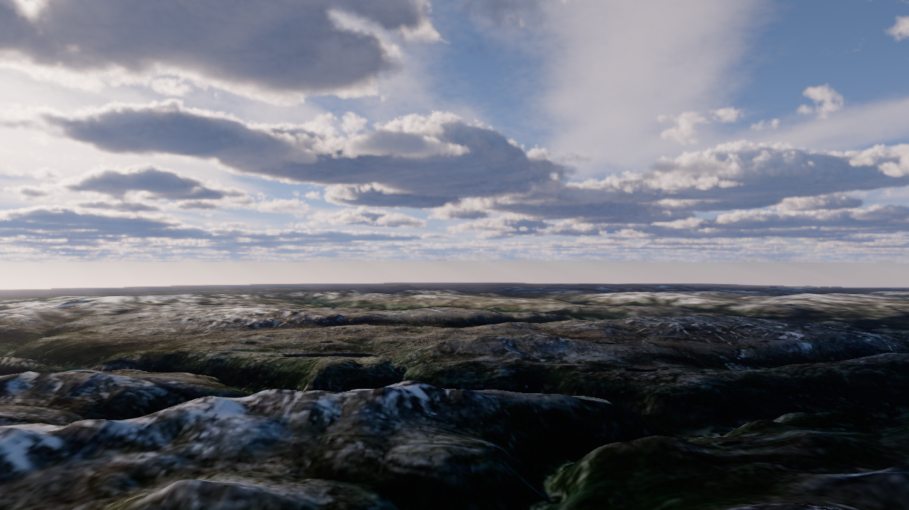
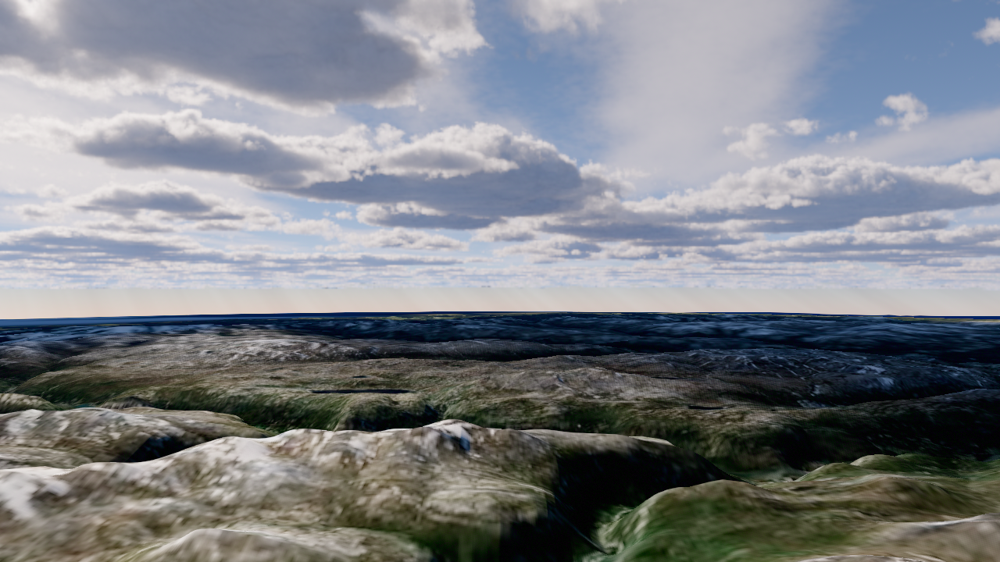
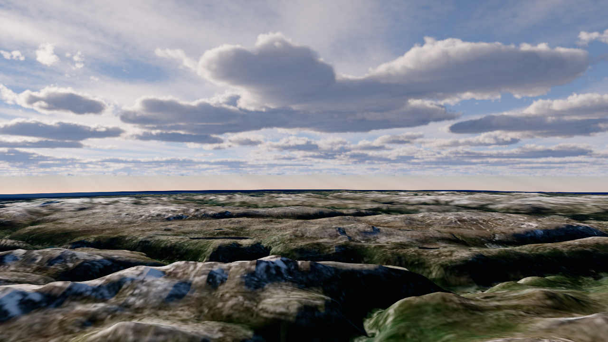
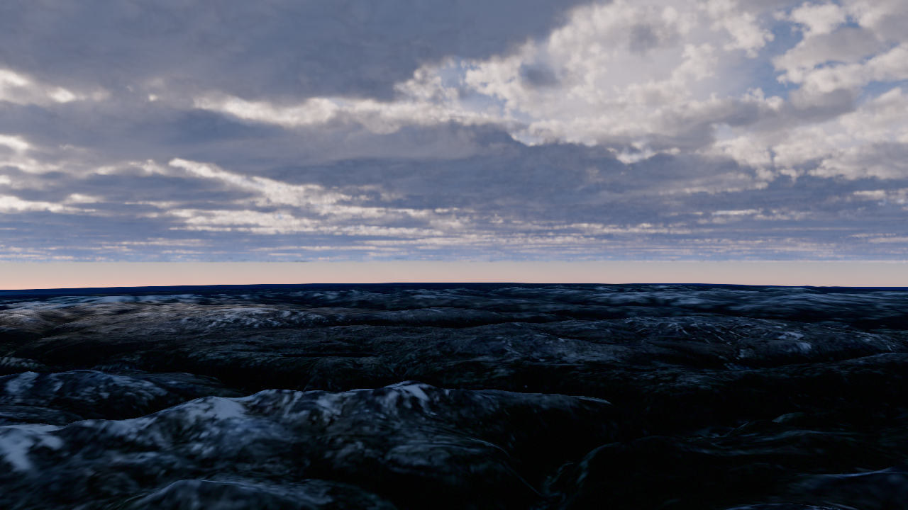

D107 · 구름 양 / 위치 / 태양 / 연무
같은 p.365 구도, high50% + 전체 cloud-buffer TAA, 응집대비1.6. 실제 캡처9쌍. 품질TUNE: 커튼빛 아직 불충분. 양.42는 기준 유지, 태양/연무 후보 미채택.
파라미터 검토 보고서

양 0.32 · 위치X 0 · 고도 16.1° · 방위 43.75° · 연무감쇠 0.001 · 빛 ON
p365-c32-x0-el1610-az4375-hz1000-on
양 0.42 · 위치X 0 · 고도 16.1° · 방위 -30° · 연무감쇠 0.001 · 빛 ON
p365-c42-x0-el1610-az-3000-hz1000-on
양 0.42 · 위치X 0 · 고도 16.1° · 방위 -30° · 연무감쇠 0.00035 · 빛 OFF
p365-c42-x0-el1610-az-3000-hz350-off
양 0.42 · 위치X 0 · 고도 16.1° · 방위 -30° · 연무감쇠 0.00035 · 빛 ON
p365-c42-x0-el1610-az-3000-hz350-on
양 0.42 · 위치X 0 · 고도 16.1° · 방위 43.75° · 연무감쇠 0.001 · 빛 ON
p365-c42-x0-el1610-az4375-hz1000-on
양 0.42 · 위치X 0 · 고도 16.1° · 방위 43.75° · 연무감쇠 0.00035 · 빛 ON
p365-c42-x0-el1610-az4375-hz350-on
양 0.42 · 위치X 0 · 고도 30° · 방위 43.75° · 연무감쇠 0.001 · 빛 ON
p365-c42-x0-el3000-az4375-hz1000-on
양 0.42 · 위치X 0.12 · 고도 16.1° · 방위 43.75° · 연무감쇠 0.001 · 빛 ON
p365-c42-x12-el1610-az4375-hz1000-on
양 0.50 · 위치X 0 · 고도 16.1° · 방위 43.75° · 연무감쇠 0.001 · 빛 ON
p365-c50-x0-el1610-az4375-hz1000-on